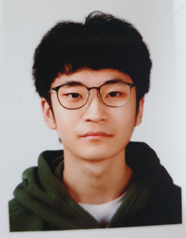

|  |
이름: 박용호나이: 24성별: 남자 |
현재 Server 운영체제에서 가장 많은 관심을 받고 있는 Ubuntu Linux OS를 통하여 Administrator(관리자) 학습 및 System Programming 을 통하여 Backend Server 환경의 다양한 시스템 구축을 위한 역량을 높이는 교육과정이다. 또한 Backend Server에서 반드시 학습해야할 vi Editor 사용법과 Shell Programming을 통하여 CLI(Command Line Interface) 환경에서 관리자 시스템 역량을 갖추는 과정
안드로이드 응용 프로그램을 개발하기 위하여 안드로이드의 개념 및 구조, 프로그래밍 방법에 대하여 학습한다. 본 교과목은 안드로이드 화면 레이아웃, 사용자 인터페이스, 이벤트와 이벤트 리스너의 개념 및 구현법, 고급 위젯 사용법, 액티비티와 인텐트 등을 학습한다. 그리고 안드로이드 그래픽과 애니메이션 구현 방법, 데이터베이스 프로그래밍, 오디오 및 비디오를 비롯한 멀티미디어 데이터 처리 방법 및 모바일 기기의 각종 센서들을 활용하는 법을 학습한다.
윈도우즈 시스템 프로그래밍이란 Windows 운영체제 기반의 컴퓨터에게 일을 시키기 위한 프로그램을 구현하는 작업이라 정의 내릴 수 있다. 이처럼 컴퓨터를 동작시키는 프로그램에 관심이 있는 전공자를 위하여 컴퓨터 구조, 운영체제, 시스템 프로그래밍의 내용 중 꼭 필요한 부분만 간추려 머리속에 그림을 그릴 수 있도록 강의를 진행한다. 과정의 내용은 크게 컴퓨터 구조와 프로그래밍 모델, 프로세스와 IPC, 멀티 쓰레드와 동기화, 메모리 관리와 I/O의 4개 부분으로 구성되며, 예제를 통한 실습을 병행 함으로써 컴퓨터 구조와 운영체제의 이해를 심화하여 파워 프로그래머로 거듭나는 발판을 마련한다.
고급네트워킹 과목과 함께, 지난 학기에 배웠던 인터넷에 대한이해와 네트워크 관련 기술을 기초로 하여, 네트워크에서 동작되는 각종 라우팅 프로토콜을 배우며, 고급네트워킹 실습 과 함께 이론과 실습을 병행하여, 네트워크 보안 분야를 심층적으로 다루고, 최근에 이슈화 되고 있는 클라우딩 컴퓨팅, SDN 등의 기술과 WAN에 대한 기술을 배운다. 본 과정은 CCNA 시스코 네트워크 아카데미과정 ccnav7 Sem2 와 Sem 3를 강의한다. 본 과정은 지난학기에 개설되는 Sem1와 Sem2를 이수한 학생들이 수강할 수 있으며, 모든 과정을 마친 후에는 국제 공인기사자격증인 CCNA 자격증을 취득할 수 있다.
고급네트워킹 과목과 함께, 지난 학기에 배웠던 인터넷에 대한이해와 네트워크 관련 기술을 기초로 하여, 네트워크에서 동작되는 각종 라우팅 프로토콜을 배우며, 고급네트워킹 실습 과 함께 이론과 실습을 병행하여, 네트워크 보안 분야를 심층적으로 다루고, 최근에 이슈화 되고 있는 클라우딩 컴퓨팅, SDN 등의 기술과 WAN에 대한 기술을 배운다. 본 과정은 CCNA 시스코 네트워크 아카데미과정 ccnav7 Sem2 와 Sem 3를 강의한다. 본 과정은 지난학기에 개설되는 Sem1와 Sem2를 이수한 학생들이 수강할 수 있으며, 모든 과정을 마친 후에는 국제 공인기사자격증인 CCNA 자격증을 취득할 수 있다.
본 교과목은 비즈니스 모델 수립을 구체화하기 위하여 국내외 스타트업의 시장과 아이템 트렌드에 대하여 학습하며, 고객 발굴 및 판매를 위한 마케팅전략 수립 방안과 디지털 도구의 활용능력을 향상시킨다. 그리고 자기 자신과 관심 스타트업에 대한 비즈니스 모델을 정리하여 다양한 분야의 스타트업 활동 방법을 학습한다.
물질의 풍요가 건강과 비례한다면 얼마나 좋을까? 하지만 건강은 넘쳐도 모자라도 좋지 않다. 현대인들은 물질적 현상에 매몰되어 보이지 않는 우리 몸 속의 소리를 들으려하지 않는다. 우리 몸이 무엇을 원하는지, 어떠한 생활습관이 건강을 보존하는지에 대한 다양한 삶의 형태를 알아 보고 건전한 생활습관을 익혀 실 생활에서 실천 가능하도록 의식의 전환과 함께 건강의 중요성을 깊이 각인 시킨다.